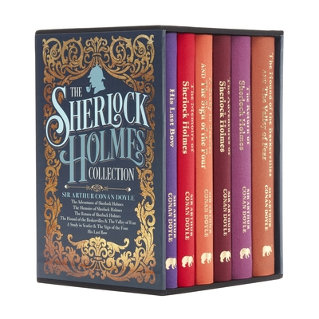
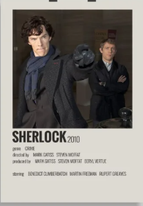

ENREDO DE SHERLOCK HOLMES

Sherlock Holmes é um detetive brilhante que vive em Londres e usa sua mente analítica para solucionar os casos mais enigmáticos. Com a ajuda de seu fiel amigo e cronista, Dr. John Watson, ele enfrenta mistérios aparentemente insolúveis,
sempre observando detalhes que passam despercebidos para os outros.
A cada nova investigação, Holmes demonstra sua incrível habilidade dedutiva, analisando pistas e traçando perfis de suspeitos com precisão. Entre ruas enevoadas, mansões sombrias e sociedades secretas, ele enfrenta desafios que
vão além do óbvio, desvendando verdades ocultas por trás de crimes bem arquitetados.
Os casos que surgem são variados: desde desaparecimentos inexplicáveis e mensagens codificadas até
perseguições eletrizantes e conspirações ocultas. Mas, por mais complexo que seja o mistério, Holmes
sempre encontra a solução, mostrando que a mente afiada pode ser a melhor arma contra o desconhecido.
Qual o momento mais te surpreendeu no livro?
"As reviravoltas que tinham nos crimes e
como o Sherlock dava uma solução tão inteligente e rapida"

O livro te trouxe alguma reflexão para sua vida?
"Na primeira saga o livro fala de situações reais que acontecem,
mas puxando pelo lado ficticio, se acontecem no livro acontece na vida real"
O que te fez escolher esse livro para ler?
"Bom, até entao a sinopse do livro sobre o misterio que era mais algo
diferente,
até mesmo sem muitos lerem o livro ja conhece sherlock holmes e quis dar uma chance,
e gostei demais, principalmente sobre a vida de detetive dele e como ele solucionava
os crimes tão rapidamente, o que tepensar em como solucinar os crimes lendo o livro, o que é incrivel"
CURIOSIDADES

CURIOSIDADE 1
Sherlock Holmes foi inspirado em uma pessoa real
Arthur Conan Doyle baseou seu famoso detetive em um médico chamado Joseph Bell, um professor de medicina que tinha
habilidades excepcionais de observação e dedução. Ele conseguia identificar doenças e até aspectos
da vida de seus pacientes apenas analisando pequenos detalhes.

CURIOSIDADE 2
Sherlock Holmes é o personagem mais retratado da história do cinema e TV
De acordo com o Guinness World Records, Sherlock Holmes é o personagem
literário mais adaptado para telas, com mais de 250 representações
diferentes, indo desde filmes clássicos em preto e branco até versões
modernas como a série Sherlock, da BBC.